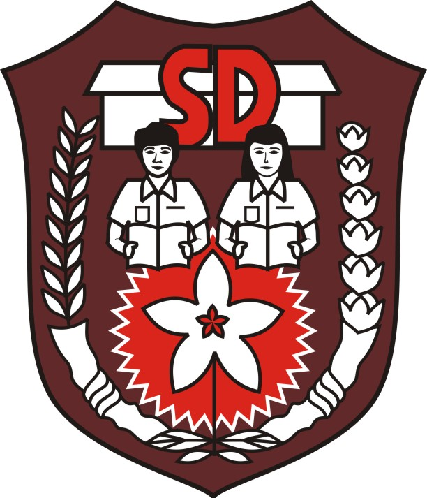

Riwayat Pendidikan

Sekolah Dasar
Saya bersekolah di SDN 005 (dulu 006), Kec. Samarinda Ulu, Kota Samarinda, Prov. Kalimantan Timur

Sekolah Menengah Pertama
Saya bersekolah di SMPN 1, Kec. Ladongi, Kab. Kolaka Timur, Prov. Sulawesi Tenggara

Sekolah Menengah Kejuruan
Saya bersekolah di SMK TI PRATAMA PGRI, Kec. Sungai Pinang, Kota Samarinda, Prov. Kalimantan Timur
Perguruan Tinggi
Saya berkuliah di UNIVERSITAS MUHAMMADIYAH KENDARI, Kec. Wua-Wua, Kota Kendari, Prov. Sulawesi Tenggara
Softskill
Problem Solving
Mampu mengidentifikasi masalah secara logis dan mencari solusi yang efisien. Pengalaman dalam coding mengasah kemampuan untuk menganalisis error, debugging, dan menyusun alur logika yang tepat dalam menyelesaikan tantangan teknis.
Kreativitas
Terbiasa menciptakan solusi visual dan ide yang menarik dalam proses desain. Kreativitas tidak hanya diterapkan pada aspek estetika, tetapi juga pada pengembangan ide dan inovasi dalam proyek digital.
Detail-Oriented
Teliti dan cermat dalam memperhatikan hal-hal kecil, baik dalam penulisan kode maupun elemen desain. Kesalahan sekecil apapun bisa berdampak besar, sehingga fokus dan ketelitian menjadi keunggulan.
Adaptabilitas
Cepat beradaptasi dengan perkembangan teknologi dan tren digital. Mampu mempelajari tools, framework, atau konsep baru secara mandiri dan sigap mengikuti perubahan kebutuhan industri.